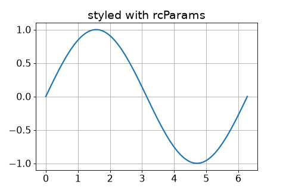
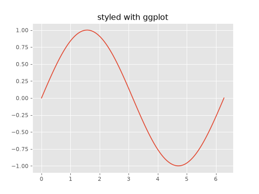
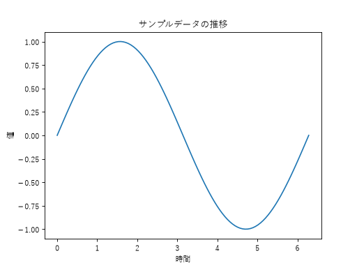

rcParams による見た目の調整
これまでのページでは、ax.set_title() や ax.plot(..., color=...) のように、グラフごとに見た目を指定してきました。しかし、資料やレポートのすべてのグラフで同じ見た目（フォントサイズ、線の太さなど）に統一したいことも多くあります。そのような場合は matplotlib.rcParams を使って、既定の設定をまとめて変更できます。
rcParams とは
rcParams は、matplotlib のさまざまな既定の設定を保持している辞書のようなオブジェクトです。ここへ値を設定すると、以降に作成するすべてのグラフへその設定が反映されます。
import matplotlib.pyplot as plt
plt.rcParams["font.size"] = 14
plt.rcParams["lines.linewidth"] = 2
plt.rcParams["axes.grid"] = True
よく使う設定項目
import matplotlib.pyplot as plt
import numpy as np
from matplotlib.axes import Axes
from matplotlib.figure import Figure
plt.rcParams["font.size"] = 14
plt.rcParams["lines.linewidth"] = 2
plt.rcParams["axes.grid"] = True
plt.rcParams["figure.figsize"] = (6, 4)
x: np.ndarray = np.linspace(0, 2 * np.pi, 100)
fig: Figure
ax: Axes
fig, ax = plt.subplots()
ax.plot(x, np.sin(x))
ax.set_title("styled with rcParams")



代表的な設定項目には次のようなものがあります。
font.size: 文字の基本サイズlines.linewidth: 線の太さaxes.grid: グリッド線を常に表示するかどうかfigure.figsize: Figure の既定のサイズ（幅, 高さ）インチ単位
スタイルシートを使う
rcParams を 1 つずつ指定する代わりに、plt.style.use() を使うと、あらかじめ用意されたスタイルシート（見た目の設定一式）をまとめて適用できます。
import matplotlib.pyplot as plt
import numpy as np
from matplotlib.axes import Axes
from matplotlib.figure import Figure
plt.style.use("ggplot")
x: np.ndarray = np.linspace(0, 2 * np.pi, 100)
fig: Figure
ax: Axes
fig, ax = plt.subplots()
ax.plot(x, np.sin(x))
ax.set_title("styled with ggplot")



利用できるスタイル名の一覧は plt.style.available で確認できます。plt.style.use() を呼び出すと、それ以降に作成するすべてのグラフへスタイルが適用されます。元に戻したい場合は、plt.style.use("default") を指定するか、次で説明する rcdefaults() を呼び出します。
設定を元に戻す
rcParams への変更はプログラムを終了するまで残り続けます。既定の設定に戻したい場合は、rcdefaults() を呼び出します。
plt.rcdefaults()
日本語を表示する
matplotlib の既定のフォントには日本語の文字が含まれていないため、タイトルや軸ラベルに日本語をそのまま指定すると、文字化け（豆腐文字）してしまいます。font.family に、Windows にインストールされている日本語対応フォント（例: "Yu Gothic"）を指定することで、日本語を正しく表示できます。
import matplotlib.pyplot as plt
import numpy as np
from matplotlib.axes import Axes
from matplotlib.figure import Figure
plt.rcParams["font.family"] = "Yu Gothic"
x: np.ndarray = np.linspace(0, 2 * np.pi, 100)
fig: Figure
ax: Axes
fig, ax = plt.subplots()
ax.plot(x, np.sin(x))
ax.set_title("サンプルデータの推移")
ax.set_xlabel("時間")
ax.set_ylabel("値")



注釈
"Yu Gothic" は Windows 標準の日本語フォントです。Windows では "Meiryo" や "MS Gothic" なども指定できます。Windows 以外の環境では、その環境にインストールされている日本語フォント名を指定してください。